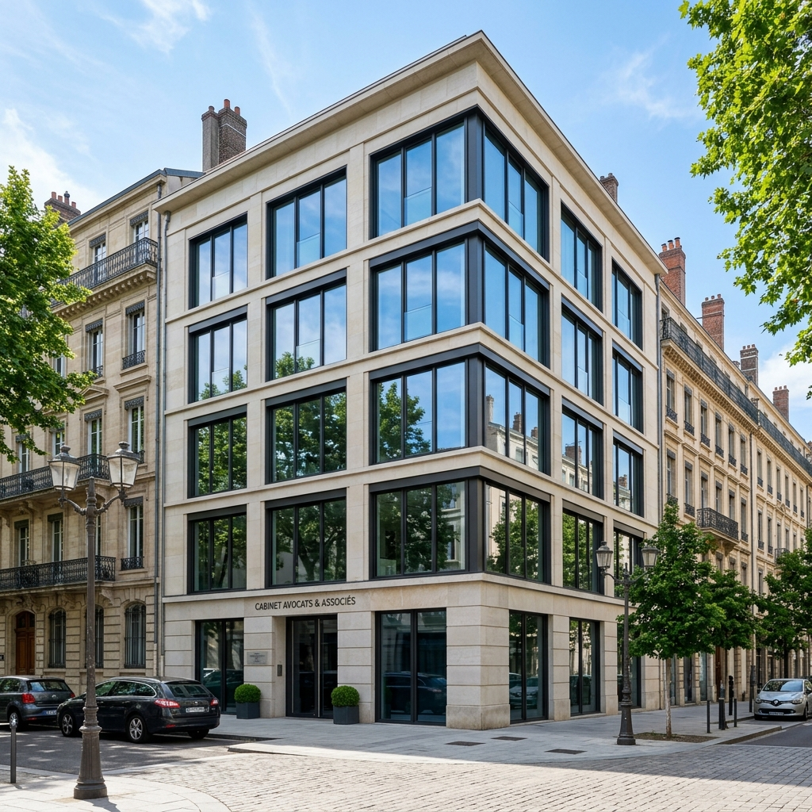
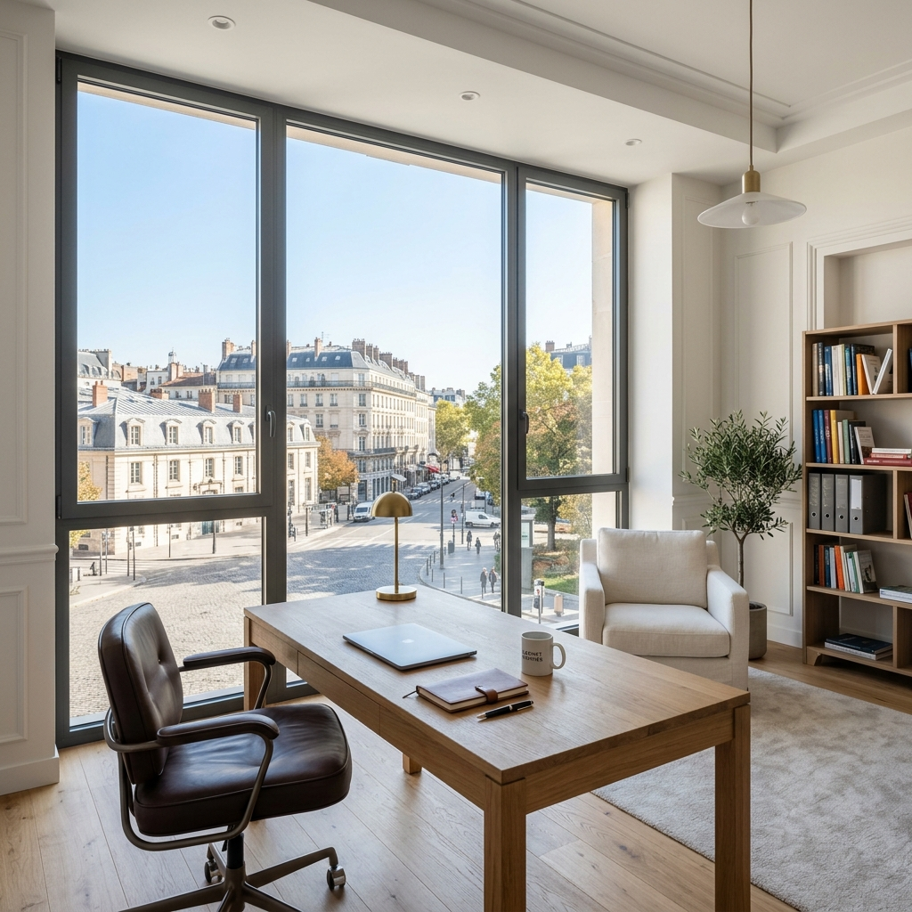

La solution professionnelle pour climatiser vos locaux sans travaux. Baissez la température de 5 à 8°C et réduisez drastiquement vos factures d'énergie.
L'architecture moderne fait la part belle aux grandes surfaces vitrées. Le problème ? En été, l'effet de serre rend vos locaux invivables, épuise vos équipes et fait exploser votre budget climatisation. Les stores intérieurs traditionnels ne suffisent pas : une fois que la chaleur a traversé la vitre, il est déjà trop tard.
C'est ici qu'intervient l'installation d'un film fenêtre anti-chaleur haute performance.
Baisse de productivité et plaintes des collaborateurs à cause d'une température excessive dans les bureaux.
La climatisation tourne à plein régime, sans succès, alourdissant considérablement vos charges fixes.
Reflets insupportables sur les écrans d'ordinateur qui fatiguent la vue et compliquent le travail sur poste.
Nous ne posons pas de simples adhésifs. Nous installons un véritable filtre anti-chaleur pour fenêtre de classe industrielle (qualité supérieure certifiée M1).
Notre solution phare, appliquée en pose extérieure pour stopper les rayons UV et infrarouges avant qu'ils ne pénètrent le verre, offre des performances inégalées sur le marché :

Découvrez votre budget estimé en 30 secondes ou demandez une étude personnalisée de vos locaux.
Vous dirigez une entreprise ou gérez un parc immobilier ? La pose de film solaire anti-chaleur est aujourd'hui l'un des leviers d'action les plus rentables (ROI atteint en 2 à 3 ans) pour répondre aux obligations du Décret Tertiaire.
Au lieu de remplacer l'intégralité de vos menuiseries, l'application de nos films optimise instantanément les performances énergétiques de vos bâtiments.
La qualité du film compte pour 50% du résultat. Les 50% restants résident dans l'expertise de l'installateur. Une pose mal exécutée entraîne des bulles, un décollement prématuré, voire un risque de "choc thermique" pouvant fissurer vos vitrages.
Nettoyage extrême, grattage minutieux et décontamination de vos vitres et encadrements.
Pour les poses extérieures, nous appliquons systématiquement un joint de scellement (silicone neutre) sur les bords pour empêcher toute oxydation ou infiltration.
Nos films longue durée bénéficient d'une durée de vie estimée entre 10 et 15 ans.
N'attendez pas la prochaine canicule. Bloquez la chaleur dès maintenant avec une solution durable et garantie.